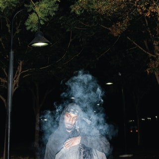

Reviews

Floating Points, Pharoah Sanders and-Promises
Promises is a tasteful, spellbinding, and beautiful intersection of jazz, classical, and electronic music.
Injury Reserve-By the Time I Get to Phoenix
After a devastating loss. Injury Reserve pulled something of a masterpiece from a truly hellish year.
.jpg)
Black Country-New Road-For the First Time
Rock debuts as daring as For the First Time are a rarity. A must listen for sure!

Black Midi-Cavalcade
Cavalcade finds black midi remaining one of the most exciting acts in modern rock while going avant-prog.

For Those I Love-Fore Those I Love
The Dublin artist and producer takes the loss of his best friend, teenage memories and ravey sounds to celebrate love, light and togetherness
Armand Hammer & The Alchemist-Haram
The Alchemist, ELUCID and billy woods drag postcolonial wounds onto the examination table.
Richar Dawson & Circle-Henki
The eccentric English songwriter and the prolific Finnish rock group collaborate for an album
Lingua Ignota-Sinner Get Ready
Latest is an intense and frightening religious inquiry, incorporating televangelist sermons.

JPEGMAFIA-LP
Unbelievable production from Madlib and a very improved and consistent Freddie Gibbs.

Tyler, the Creator-Call Me if You Get Lost
Wu-Tang and Baudelaire, together at last!

Freddie Gibbs & Madlib-Piñata
Unbelievable production from Madlib and a very improved and consistent Freddie Gibbs.